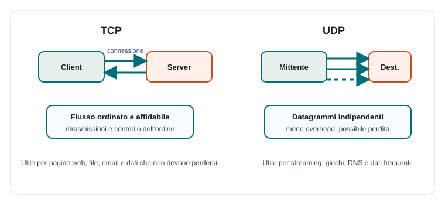

Capitoletto 2
Socket
Un socket è il punto di accesso software con cui un'applicazione invia e riceve dati in rete. Per programmare applicazioni client-server bisogna capire indirizzi, porte, protocolli di trasporto e gestione degli errori.
Obiettivi della lezione
- Definire che cos'è un socket.
- Collegare socket, indirizzo IP, porta e protocollo.
- Distinguere socket TCP e socket UDP.
- Descrivere le fasi principali di client e server.
- Riconoscere errori comuni nelle comunicazioni di rete.
Che cos'è un socket
Un socket è un endpoint di comunicazione: rappresenta una delle due estremità di un collegamento tra applicazioni. Attraverso il socket un programma può inviare byte verso un altro processo e ricevere byte da esso.
Un socket non è il cavo di rete e non è il protocollo completo: è l'interfaccia offerta dal sistema operativo al programma. Il programma chiede al sistema operativo di aprire, usare e chiudere la comunicazione.
Indirizzo, porta e trasporto
Per comunicare bisogna sapere quale macchina raggiungere e quale servizio contattare. L'indirizzo IP individua l'host, la porta individua l'applicazione o il servizio, il protocollo di trasporto stabilisce come i dati viaggiano.
| Elemento | Domanda a cui risponde | Esempio |
|---|---|---|
| IP | Dove si trova la macchina? | 192.168.1.30 |
| Porta | Quale servizio sto contattando? | 8080, 443 |
| TCP/UDP | Come vengono trasportati i dati? | Flusso affidabile o datagrammi. |
| Protocollo applicativo | Che significato hanno i messaggi? | HTTP, DNS, protocollo del registro. |
TCP e UDP
I socket usano spesso due protocolli di trasporto: TCP e UDP. TCP stabilisce una connessione e fornisce un flusso ordinato e affidabile. UDP invia datagrammi indipendenti, più leggeri ma senza garanzia automatica di consegna e ordine.

| Aspetto | TCP | UDP |
|---|---|---|
| Connessione | Prima di comunicare viene stabilita una connessione. | Non richiede una connessione preventiva. |
| Dati | Flusso di byte ordinato. | Datagrammi separati. |
| Affidabilità | Gestisce ritrasmissione e ordine. | Non garantisce automaticamente consegna e ordine. |
| Uso tipico | Web, file, posta, login. | DNS, streaming, giochi, sensori. |
Ciclo di vita di un server TCP
Un server TCP segue una sequenza tipica. Prima crea un socket, poi lo collega a una porta locale, si mette in ascolto e accetta connessioni dai client. Ogni connessione accettata viene poi usata per scambiare dati.
Server TCP:
crea socket
associa socket a indirizzo e porta
mette il socket in ascolto
ripeti:
accetta connessione da un client
ricevi richiesta
invia risposta
chiudi connessione o continua la conversazioneNei server reali l'accettazione di una connessione può avviare un thread, usare una coda di lavoro o affidarsi a un modello asincrono, così più client possono essere serviti nello stesso periodo.
Ciclo di vita di un client TCP
Il client normalmente crea un socket, si connette all'indirizzo e alla porta del server, invia una richiesta, legge la risposta e chiude la comunicazione quando non serve più.
Client TCP:
crea socket
si connette al server
invia richiesta
riceve risposta
chiude socketLa chiusura è importante perché libera risorse del sistema operativo. Lasciare socket aperti inutilmente può consumare memoria, porte e connessioni disponibili.
Errori e timeout
La rete è meno prevedibile della memoria locale. Un server può non rispondere, una connessione può interrompersi, un messaggio può arrivare incompleto, un client può chiudere prima del previsto. Per questo un programma di rete deve gestire errori e timeout.
| Problema | Che cosa può succedere | Come si gestisce |
|---|---|---|
| Server non raggiungibile | La connessione fallisce. | Mostrare errore e permettere nuovo tentativo. |
| Timeout | La risposta non arriva entro il tempo previsto. | Interrompere l'attesa e liberare risorse. |
| Dati incompleti | Il messaggio non può essere interpretato. | Validare lunghezza, formato e fine messaggio. |
| Chiusura improvvisa | Una parte interrompe la comunicazione. | Gestire eccezione e ripulire lo stato. |
Esempio guidato: chat scolastica
- Il server apre una porta e resta in ascolto.
- Ogni client si connette con un socket.
- Il client invia messaggi testuali codificati.
- Il server riceve un messaggio e lo inoltra ai destinatari.
- Se un client si disconnette, il server chiude il socket corrispondente.
Esercizi guidati
- Spiega perché IP e porta servono entrambi.
- Indica tre applicazioni adatte a TCP e due adatte a UDP.
- Disegna il ciclo di vita di un server TCP.
- Descrivi che cosa dovrebbe fare un client quando scatta un timeout.
Domande con risposta semplice
Un socket identifica da solo il protocollo applicativo?
No. Il socket permette di inviare e ricevere dati; il protocollo applicativo stabilisce il significato dei messaggi scambiati.
Perché TCP è detto affidabile?
Perché gestisce ordine, controllo degli errori e ritrasmissione dei dati persi, offrendo all'applicazione un flusso ordinato di byte.
UDP è sempre peggiore di TCP?
No. UDP è utile quando conta la rapidità o quando l'applicazione può tollerare qualche perdita, come in streaming, giochi o richieste molto brevi.
Per ripassare
Un socket è un endpoint. Per descriverlo bene cita sempre: indirizzo IP, porta, protocollo di trasporto e protocollo applicativo che interpreta i dati.